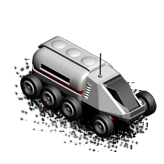

Scout
A scout is a special unit equipped with with special tools and
instruments to discover and map Martian surface. Scout's armour and
weapons are kept to a minimum to extend its range and mobility, it will
fight back when attacked but keeping the unit away from combat by using
its superior speed and maneuverability is more preferable.
Scout unit has an exploration radius of 2 instead of 1. This makes it an
excellent choice for exploration missions.

| Movement points |
3 |
| Attack |
5 |
| Defence |
5 |
| Production cost |
1000 |
| Upkeep cost |
10 |
| Exploration radius |
2 |
Can move on:
- Plains
- Desert
- Wasteland
- Ice
- Tundra
- Crater
- Hills
- Mountains